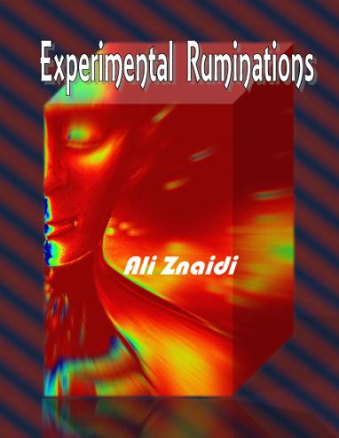

Jester-Knight
Literature
Film
Music
Visual Art
Tributes
Submissions
Links
Contact
Ali Znaidi

Biography
Ali Znaidi (b.1977) lives in Redeyef, Tunisia where he teaches English. His work has appeared in Mad Swirl, Stride Magazine, Red Fez, BlazeVox, Otoliths, streetcake, & elsewhere. His debut poetry chapbook Experimental Ruminations was published in September 2012 by Fowlpox Press (Canada). From time to time he blogs at – aliznaidi.blogspot.com and tweets at @AliZnaidi.
Click below for Ali's work
Poems (.pdf)